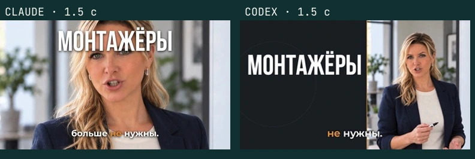
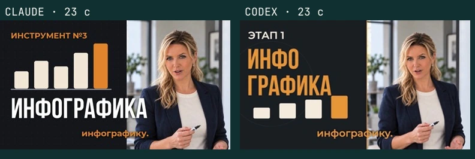
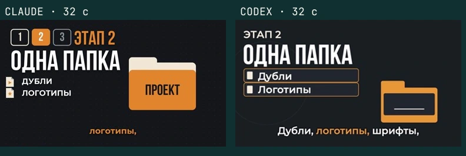
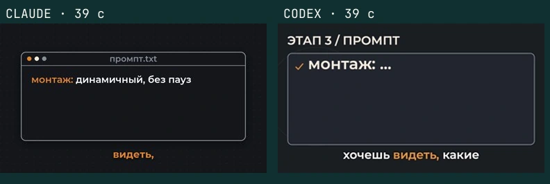

Инструкция · Один промпт, два монтажа

Монтаж видео нейросетью Claude Code или Codex: один промпт, два результата
Средний уровень
Как поручить монтаж видео Claude Code или Codex? Собери исходники в папку material и сохрани подробный промпт с тем, что должно получиться. Попроси агента подключить нужные инструменты и начинай монтаж в новой папке. Ниже можно сравнить два результата на одинаковых материалах и найти выход, если работа остановится
Дубли лежат в папке, а монтаж снова съедает вечер. Можно отдать эту работу агенту на компьютере, но как понять, какой справится лучше? Для сравнения Claude Code и Codex получили один подробный промпт, один голос и одинаковые записи аватара, цифрового двойника в кадре. На выходе получились два разных монтажа.
Это разбор одного конкретного ролика, его можно посмотреть целиком в разделе «Как был собран ролик». Обе модели работали в новых пустых папках, без памяти и привязки к проекту. Здесь можно взять полное задание, подключить инструменты и повторить такой запуск со своими материалами. А затем сравнить кадры: где каждая модель распорядилась заданием по-своему и почему время работы отличается почти в два с половиной раза.
Монтаж видео Claude Code или Codex: что нужно до начала
Нужны компьютер, Claude Code или Codex и папка с исходниками. Это агенты: программы, которые открывают разрешённые файлы на твоём компьютере и запускают инструменты по заданию словами. Обычный разговор на сайте не заменяет этот доступ. Агент здесь как помощник за рабочим столом, которому можно показать материалы и объяснить результат.
Работать с агентом можно там, где удобнее: в приложении на компьютере, в редакторе VS Code или в терминале. У Claude Code есть приложение Claude для Mac и Windows, где нужна вкладка Code, а у Codex своё приложение Codex. В обоих выбираешь папку проекта и пишешь задание в чат. Версии в браузере для монтажа не подходят: они работают в облаке и не видят программы и файлы на твоём компьютере.
Если удобнее редактор, установи агента по статье «Claude Code и Codex в VS Code». VS Code - редактор, в котором рядом видны папка проекта и разговор с агентом. Дальше все шаги показаны на VS Code, в приложении они те же: открыть папку и написать в чат. Код для первого монтажа писать не требуется. В Claude Code можно войти с подпиской Pro, Max, Team или Enterprise, либо через аккаунт Console. В Codex войди аккаунтом ChatGPT; при входе с API-ключом часть функций может быть недоступна. Условия описаны в быстром старте Claude Code и быстром старте Codex.
Открой агента: приложение или панель в VS Code. Запрос на установку из следующего шага отправляй туда, в чат агента. После подготовки компьютера для самого монтажа откроем отдельную папку и начнём новый разговор.
Шаг 1. Попроси агента подключить инструменты
Сам по себе агент резать видео не умеет, для этого ему нужны три программы. Ставить их вручную не нужно: агент поставит всё сам по одной просьбе, а ты только разрешаешь его действия. Сначала коротко о том, что это за программы.
FFmpeg: обрезать и склеить дубли
Когда в начале дубля есть пауза, а нужная фраза лежит в другом файле, FFmpeg помогает вырезать и соединить эти куски. Это «руки» монтажа, ножницы и клей для видео и звука. Агент говорит ей, что сделать, а она режет, склеивает и сохраняет файл в нужном формате. Какую сцену оставить, она сама не решает, это ты объясняешь агенту. Установщики для разных систем собраны на официальной странице FFmpeg.
Whisper: понять, когда звучит каждое слово
Если титр появляется раньше нужной фразы, зрителю приходится читать и слушать разное. Whisper - это «уши» монтажа. Он слушает звук из видео и записывает речь текстом, отмечая, на какой секунде прозвучало каждое слово. По этим отметкам агент и ставит титры точно под слова. Мы берём версию, которая работает прямо на компьютере, она называется whisper.cpp.
Для распознавания нужен отдельный файл модели ggml-large-v3-turbo.bin. В нём хранится всё, что программа знает о речи. Агент скачает его из каталога моделей whisper.cpp. Сама транскрипция выполняется на компьютере и не отправляет видео в облако. Имена и названия всё равно проверь: распознавание может ошибаться, а точность отметок времени нужно сверять с речью. Сам агент при этом работает через интернет, как обычно. Подробности локальной работы есть в документации whisper.cpp.
HyperFrames: добавить движущуюся графику
Когда поверх видео нужны схема, число или подпись с движением, одной склейки мало. HyperFrames добавляет поверх видео надписи, схемы и движение. Агент решает, где появится надпись и как она будет двигаться, а HyperFrames собирает из этого кадры готового MP4. Снимать ролик и придумывать, о чём он, за тебя он не будет.
HyperFrames сделали в HeyGen и выложили в открытый доступ. Видео он собирает на твоём компьютере и кредиты HeyGen на это не тратит. Для работы ему нужны FFmpeg и программа Node.js, их агент поставит вместе с ним. У самого агента и у сервисов голоса или аватара, если ими пользоваться, свои условия. Подробности есть на странице HyperFrames на GitHub и в быстром старте.
Есть и другой инструмент для графики, Remotion. Частным лицам, некоммерческим организациям и компаниям до трёх сотрудников он открыт свободно, а большим компаниям нужна коммерческая лицензия.
Программа ffprobe, которая устанавливается вместе с FFmpeg, показывает размер, длительность и другие параметры файла. После установки агент сможет проверять ими готовый MP4.
Теперь скопируй запрос ниже и вставь его в чат агента, в приложении или в панели VS Code:
Подготовь этот компьютер к локальному монтажу видео. Сначала определи операционную систему и проверь, что уже установлено. Существующие рабочие установки не заменяй без необходимости. Поставь недостающее: FFmpeg с ffprobe, whisper.cpp с whisper-cli, модель ggml-large-v3-turbo.bin из официального каталога whisper.cpp и Node.js 22 или новее. Подключи HyperFrames к моему агенту по официальной документации: плагин для Claude Code или скиллы для Codex. Пароли не проси в чате; если их требует системное окно, объясни, где мне ввести их самостоятельно. Перед каждым запросом разрешения объясни, что устанавливаешь, откуда скачиваешь и какую папку меняешь. Исходные видео никуда не загружай. После установки покажи фактические версии FFmpeg, whisper.cpp и HyperFrames, версию Node.js и полный путь к модели. Если whisper-cli не сообщает версию отдельной командой, покажи версию установленного пакета и успешный запуск его справки. Проверь, что мой агент видит инструкции HyperFrames. Если для этого нужен перезапуск, скажи, что открыть заново. Не выдавай установку за завершённую, пока проверки не пройдут.
Агент может попросить доступ к папке, разрешение скачать программу или запустить установку. Разрешай действие, когда в запросе указаны нужный инструмент, официальный источник и понятная папка. Если нужно подтвердить установку в системном окне, сделай это там и вернись в чат. Если агент остановился из-за отсутствия доступа, покажи ему полный текст отказа.
Результат: в ответе есть версии FFmpeg, whisper.cpp и HyperFrames, Node.js 22+ и путь к скачанной модели. Агент подтверждает, что может запускать эти программы из папки ролика.
Если агент не смог поставить сам
Это запасной маршрут. Открой в VS Code Terminal → New Terminal («Терминал → Новый терминал»). Ниже команды, которые агент обычно запускает или просит разрешить. Если потребуется ручной ввод, выполняй только блок для своей системы и своего агента, по одной строке.
На Mac с Homebrew установка FFmpeg и whisper.cpp выглядит так. Если Homebrew ещё нет, его установку возьми с brew.sh. Название пакета теперь whisper.cpp, прежнее whisper-cpp встречается в старых инструкциях. Актуальное имя указано в каталоге Homebrew.
brew install ffmpeg brew install whisper.cpp ffmpeg -version whisper-cli --help
Модель не входит в установку автоматически: скачай ggml-large-v3-turbo.bin из каталога выше, положи в отдельную папку models на компьютере и сообщи агенту путь. Для Windows/Linux возьми FFmpeg со страницы загрузки выше, а whisper.cpp установи по официальной инструкции сборки. Если она требует Git, CMake или компилятор, покажи агенту конкретный шаг: он поможет подобрать установку под твою систему.
Node.js 22+ возьми с официальной страницы Node.js. Для Claude Code подключение плагина выглядит так:
claude plugin marketplace add heygen-com/hyperframes claude plugin install hyperframes@hyperframes
Для Codex используется установка скиллов. Скилл - набор инструкций, по которым агент собирает видео. В списке выбери Codex и Core Skills («основные скиллы»):
npx skills add heygen-com/hyperframes
Если агент устанавливает без интерактивного списка, в инструкции HyperFrames советуют команду npx hyperframes skills update для основного набора. После установки перезапусти разговор с агентом. В Claude Code отправь: «Используя /hyperframes:hyperframes, сделай титульный кадр на 5 секунд с надписью “Привет”». В Codex попроси использовать скилл HyperFrames для такого же кадра. Порядок подключения есть в руководстве по плагинам.
Попроси агента показать npx hyperframes info и повторить проверки из основного запроса. К следующему шагу переходи, когда он видит все инструменты и модель.
Шаг 2. Собери материалы в папку material
Теперь собери один набор исходников. В Finder на Mac или Проводнике на Windows создай папку video-project, а внутри неё material. Это материалы ролика: агенту не придётся искать голос в загрузках, шрифты в переписке и видео на телефоне.
Коротко, что было на входе в нашем примере. Полная озвучка одним файлом и текст этой озвучки со временем каждого слова. Записи аватара, уже нарезанные на куски по паузам, а не одна сплошная запись. Два шрифта и три коротких звука для появления элементов. Всё остальное: сцены, приёмы монтажа, цвета и переходы - описано словами в промпте.
Ниже те же файлы подробно. Названия в таблице совпадают с полным промптом, поэтому их удобно оставить и для первого собственного запуска.
| Файл внутри material | Зачем он нужен |
|---|---|
voice.wav | Главная озвучка. По ней выстраивается весь ролик; звук из видео аватара не используется. |
words.json | Текст речи с началом и концом каждого слова в секундах. По нему агент привязывает субтитры и графику к голосу. |
avatar-01.mp4 | Первая запись аватара, для участка голоса от 0 до 23,37 секунды. |
avatar-02.mp4 | Вторая запись аватара, для участка от 41,065 до 66,15 секунды. |
fonts/BebasNeueCyrillic.ttf | Шрифт крупных заголовков. |
fonts/Montserrat-SemiBold.ttffonts/Montserrat-Bold.ttf | Шрифты субтитров и подписей. |
sfx/pop.mp3sfx/click.mp3sfx/whoosh.mp3 | Короткие звуки для появления слов, щелчков и переходов. Музыки в этом задании нет. |
Свой голос можно записать обычным способом, а вместо аватара использовать собственное видео. Готовые шрифты и звуки сложи в подпапки fonts и sfx внутри material. Логотипы, музыку и пример желаемого монтажа добавляй только тогда, когда они упомянуты в твоём задании.
Файл words.json руками не делается и не устанавливается: его по голосу собирает сам агент. Если он у тебя уже есть, пропусти блок ниже.
Нет words.json? Агент сделает его сам
Открой папку video-project в агенте и отправь запрос ниже. Агент распознает голос и запишет каждое слово с секундами.
Возьми material/voice.wav. Распознай речь локально через whisper.cpp с моделью large-v3-turbo. Сохрани material/words.json: список слов, для каждого word (слово), start (начало) и end (конец). Время укажи в секундах от начала голоса. Проверь названия, пунктуацию и совпадение отметок со звуком. Покажи расшифровку и спорные места для исправления текста до монтажа. Видео и голос никуда не загружай.
Агент покажет расшифровку. Исправь в чате неточные слова и попроси записать исправления в words.json, сохранив отметки времени. Если в твоём ролике другие куски видео, названия или длительность, поменяй соответствующие строки промпта.
Не клади сюда архив старого проекта, лишние дубли и материалы других роликов. Для сравнения двух моделей сделай две новые папки, например montazh-claude и montazh-codex, и скопируй в каждую одну и ту же готовую material. Эти папки не должны находиться внутри прежнего рабочего проекта с его правилами.
Результат: в material лежат нужные видео, озвучка, проверенные слова с временем, шрифты и звуки. Для сравнения у обеих моделей одинаковые копии этих файлов.
Шаг 3. Сохрани подробный промпт
Просьба «смонтируй красиво» оставляет агенту почти все решения: что выделить, когда показать лицо и какой текст поставить на экран. В нашем задании эти решения описаны до запуска: время каждой сцены, точные слова, размер надписей, цвета, переходы и окна, когда лицо нужно закрыть графикой.
Ниже полный промпт, который получили обе модели. Скопируй его. В VS Code выбери File → New Text File («Файл → Новый текстовый файл»), вставь текст, затем File → Save As («Файл → Сохранить как»). Сохрани его в папке проекта с именем PROMPT.md. Это обычный документ с заданием, а не программа. Для двух моделей сохрани одинаковый файл в обеих папках.
# Промпт на автомонтаж ролика «ИИ монтирует лучше монтажёра?» Ты монтажёр коротких роликов уровня топовых Reels. Смонтируй горизонтальное видео по этому заданию. Всё, что нужно, лежит в папке проекта `material/`. Ничего не скачивай, браузер не запускай ## 1. Что за ролик Короткий обучающий ролик для Instagram. Девушка-эксперт (аватар) объясняет, как смонтировать видео нейросетью за три этапа. Зритель - новичок в нейросетях, смотрит с телефона без звука или со звуком. Задача монтажа: удержать внимание каждую секунду и показать смысл каждой фразы картинкой ## 2. Формат - 1280×720, 16:9, 30 fps, H.264 + AAC, длина ровно по голосу 66,15 с - Видео потом уменьшится до 920 px по ширине и встанет в половину вертикального экрана. Поэтому всё крупно и контрастно: главное слово не меньше 110 px по высоте букв, подписи не меньше 40 px, мелкого текста нет - Безопасные поля 40 px со всех сторон, текст за них не выходит ## 3. Материалы в `material/` | Файл | Что это | |---|---| | `voice.wav` | Голос, главная дорожка. Темп, высоту и громкость не менять | | `words.json` | Каждое слово голоса с началом и концом в секундах | | `avatar-01.mp4` | Аватар 1080×1920 (вертикальный), губы совпадают с голосом 0,00-23,37 с. Кадр куска = время голоса | | `avatar-02.mp4` | Аватар 1080×1920, губы совпадают с голосом 41,065-66,15 с. Кадр куска = время голоса минус 41,065 | | `fonts/BebasNeueCyrillic.ttf` | Заголовки и крупные слова | | `fonts/Montserrat-SemiBold.ttf`, `Montserrat-Bold.ttf` | Субтитры, подписи, текст в карточках | | `sfx/pop.mp3` | Мягкий pop: появилось слово, цифра, карточка | | `sfx/click.mp3` | Короткий клик: шаг, выбор, галочка, печать текста | | `sfx/whoosh.mp3` | Воздушный whoosh: смена сцены, въезд элемента, линия | Звук из файлов аватара не использовать ## 4. Стиль - **Цвета.** Фон тёмный графит `#15171C`. Главный акцент оранжевый `#E2852E`. Текст белый `#FFFFFF`. Второстепенный текст и рамки кремовый `#F3E9D7` и серый `#8A8F98`. Других цветов нет, кроме цветов логотипов ChatGPT и Claude - **Шрифты.** Крупные слова и заголовки - Bebas Neue, капсом. Всё остальное - Montserrat. Размер подбирай сам, чтобы читалось на 920 px - **Логотипы и иконки** рисуешь сам простыми плоскими значками (папка, плёнка, ножницы, ухо, волна звука, часы, файл, стрелка). Логотипы ChatGPT и Claude - узнаваемые упрощённые значки - **Субтитры.** Внизу по центру, нижний край строки всегда на y=660, никогда не прыгают по высоте. 1-3 слова, дословно по `words.json`, текущее слово оранжевым, остальные белые, мягкая тёмная тень без плашки. Субтитры не перекрывают рот и главное слово ## 5. Аватар - обязательные правила 1. **Используй ВСЕ записи аватара.** С 0,00 по 23,37 с и с 41,065 по 66,15 с аватар в кадре всё время. Убирать его можно только в окнах улыбок (пункт 3) 2. **Основная раскладка:** аватар справа, занимает правые 45% кадра на всю высоту, с родным фоном, без вырезки, пропорции не искажать. Левые 55% - графика по смыслу фразы. На хуке (0-4,5 с) и в финале (60,6-66,15 с) можно аватар на весь кадр с графикой поверх 3. **Широкие улыбки с зубами не показывать.** В эти окна лицо закрыто графикой (карточка, крупное слово, иконка поверх зоны аватара) или аватар временно сменяется полноэкранной графикой. Окна: 1,96-2,50 · 9,30-10,20 · 13,25-13,76 · 18,15-18,65 · 20,84-21,70 · 47,56-48,40 · 52,84-53,80 · 55,43-56,40 · 58,20-60,64 с. Вне окон лицо открыто 4. С 23,37 по 41,065 с записи аватара нет: здесь вся ширина кадра под графику. Аватар в этом промежутке не показывать 5. Наезд на аватар разрешён: плавно 100→108% на ударных словах, не чаще раза в 4 с ## 6. Сцены (время по голосу) | Время, с | Голос | Что обязательно на экране | |---|---|---| | 0,0-2,0 | Монтажёры, похоже, больше не нужны | Крупно МОНТАЖЁРЫ, на «не нужны» появляется НЕ НУЖНЫ? оранжевым | | 2,1-4,5 | Я отдала монтаж нейросети, и вот что получается | Значок «монтаж» (плёнка) переходит к значку нейросети | | 4,6-7,4 | Давай сравним, как ChatGPT и Claude монтируют видео | СРАВНИМ, логотипы ChatGPT и Claude рядом через «VS» | | 7,5-10,2 | Чтобы монтировать видео нейросетью, нужно пройти три этапа | 3 ЭТАПА, три пустые ячейки 1 · 2 · 3 | | 10,3-11,7 | Сначала подключить инструменты | Ячейка 1 загорается: ЭТАП 1 · ИНСТРУМЕНТЫ | | 11,8-16,3 | FFmpeg - это руки нейросети. Режет и склеивает материал | FFMPEG = РУКИ, плёнку режут ножницы и склеивают | | 16,4-21,0 | Whisper - это уши. Переводит видео и аудио в текст | WHISPER = УШИ, волна звука превращается в строки текста | | 21,2-23,4 | А третий инструмент отвечает за всю инфографику | ИНФОГРАФИКА, растущие столбики или карточки | | 23,4-26,7 | Выбираешь между двумя фреймворками, HyperFrames или Motion | Две карточки HYPERFRAMES и MOTION, загораются по словам | | 26,8-27,4 | Дело вкуса | ДЕЛО ВКУСА поверх обеих карточек | | 27,6-30,7 | Второе. Собираешь в одну папку всё, что касается проекта | Ячейка 2 загорается: ЭТАП 2 · ОДНА ПАПКА, большая папка | | 30,8-33,4 | Дубли, логотипы, шрифты, музыку | Четыре файла влетают в папку по словам, с подписями | | 33,5-35,0 | И отдаёшь эту папку нейросети | Папка уезжает к значку нейросети | | 35,1-36,9 | Третье. Пишешь подробный промпт | Ячейка 3 загорается: ЭТАП 3 · ПРОМПТ | | 37,2-41,1 | Какой монтаж хочешь видеть, какие переходы, какой стиль | Окно промпта, строки печатаются по словам: «монтаж: …», «переходы: …», «стиль: …» | | 41,1-45,7 | Вот в чём фишка: результат зависит от промпта больше, чем от модели | Аватар. ПРОМПТ > МОДЕЛЬ, знак «больше» крупно | | 45,9-49,1 | Хочешь крутой монтаж? Пиши подробное задание, а не одну строчку | Аватар. Одна строчка зачёркивается, рядом длинное задание с галочками | | 49,2-52,1 | Монтаж такого ролика - примерно 30 минут | 30 МИНУТ, часы с бегущей стрелкой | | 52,2-55,4 | Это реально работает уже сейчас, без монтажёра | БЕЗ МОНТАЖЁРА, галочка | | 55,4-57,6 | И кстати, на этом видео мой аватар | АВАТАР, стрелка на аватара | | 57,6-60,5 | То есть всё, от идеи до монтажа, сделано нейросетью | Цепочка ИДЕЯ → ТЕКСТ → ГОЛОС → АВАТАР → МОНТАЖ, звенья по словам | | 60,6-64,6 | Инструкция по автомонтажу придёт за слово МОНТАЖ в комментариях | Крупно слово МОНТАЖ оранжевым, значок комментария, «пиши в комментариях» | | 64,6-66,15 | Она же есть по ссылке в профиле | «или ссылка в профиле» | ## 7. Движение - Движение поддерживает смысл: элемент появляется ровно на своём слове (±0,1 с), не раньше - Внутри сцены элементы накапливаются, а не сменяют друг друга по одному - Смена сцены - короткий переход до 0,3 с (сдвиг, вытеснение, масштаб). Без растворений через чёрное - Ни одна картинка не стоит неподвижно дольше 2 с: лёгкий дрейф, пульс акцента, наезд - Выбор приёмов, скорости и анимации - за тобой. Цель: самое сильное и понятное видео по этому заданию ## 8. Звук - Голос без изменений + звуки из `sfx/`. Музыки нет - Звук ставится на точное визуальное попадание (появилось слово, влетел файл, сменилась сцена), минимум один звук на 5 с, громкость звуков 0,2-0,3 от голоса - Итог -16 LUFS, пик не выше -1 dBTP ## 9. Сдача - `МОНТАЖ-<твоё имя>.mp4` и лист кадров каждые 0,5 с `ЛИСТ-<твоё имя>.jpg` - Перед сдачей проверь по листу: аватар есть во всех кадрах 0-23,37 и 41,065-66,15 кроме окон улыбок, улыбок с зубами нет, субтитры на одной линии, всё читается - `ОТЧЁТ-<твоё имя>.md`: какие приёмы выбрал и почему, сколько заняла работа
Что поменять под свой ролик. В этом опыте каждая модель собирала горизонтальное видео 1280×720, чтобы две версии поместились в вертикальном сравнении. Для самостоятельного вертикального ролика укажи 1080×1920 и соотношение 9:16. Затем замени сцены и их время под свой голос, цвета и шрифты под свой стиль. Пересчитай положение субтитров, безопасные поля и раскладку аватара под новый размер кадра. Если аватара нет, убери правила его появления и окна улыбок.
В таблице сцен сохранено слово «Motion», потому что так прозвучала исходная озвучка. Здесь имеется в виду Remotion. Реплика «примерно 30 минут» тоже часть этого конкретного ролика, а не срок для твоего монтажа. Первый запуск включает установку, а дальнейшее время зависит от компьютера, длины ролика и числа правок.
Результат: рядом с material сохранён PROMPT.md. Названия файлов, размер кадра, сцены и их время соответствуют твоим материалам.
Шаг 4. Запусти монтаж в новой папке
Открой папку готового запуска: в VS Code через File → Open Folder («Файл → Открыть папку»), в приложении через выбор папки проекта. Для первого монтажа это твоя video-project. Для сравнения открывай montazh-claude в Claude Code, а montazh-codex в Codex. Начни новый разговор, который не продолжает прежнюю переписку.
До запуска монтажа в папке должны быть только PROMPT.md и material. Если агент наследует общие пользовательские инструкции или память, отключи их для сравнения. Попроси подтвердить путь папки и сообщить, видит ли он правила за её пределами; если видит, исключи их до запуска. Одна пустая папка сама по себе не отключает общие настройки агента.
В нашем сравнении Claude Code работал с Opus 5.5, Codex с GPT-Sol. Обе модели выбраны одного уровня, уровень усилий high («высокий»): модель тратит больше усилий на обдумывание задачи перед действием. Это настройки конкретного запуска; выбирай доступную модель в своём агенте. В готовом ролике нижняя панель подписана ChatGPT, но монтаж выполнял агент Codex.
Когда папка и настройки выбраны, отправь одну фразу:
Смонтируй по PROMPT.md.
Агент прочитает файл и соберёт ролик. Если ему не хватает материала, исправь название или добавь именно отсутствующий файл. Сохранение проекта, MP4, листа кадров и отчёта уже описано в разделе «Сдача» промпта.
Готовый файл по этому заданию называется МОНТАЖ-CLAUDE.mp4 или МОНТАЖ-CHATGPT.mp4 и лежит в папке запуска. Для своей версии имя зависит от имени, которое использует агент. Попроси его показать точное имя и открыть файл в обычном видеоплеере; при необходимости найти его можно через Finder или Проводник.
Просмотри ролик целиком со звуком, затем без звука.
- Начало без случайного чёрного кадра; финальная фраза не обрезана.
- Речь слышна, эффекты не заглушают голос.
- Титры совпадают со словами и остаются на одной линии.
- Текст читается на телефоне, графика не закрывает рот; лицо закрывается только в заданные окна.
Если нужна правка, назови секунду и предмет: «На 00:12 титр появляется раньше слова. Сдвинь только этот титр по началу слова в звуке. Остальные сцены сохрани, новую версию запиши отдельным MP4». Сравни этот участок в двух версиях, затем просмотри новую целиком.
Результат: в папке запуска есть открываемый MP4, лист кадров и отчёт. После просмотра понятно, какие места оставить и что попросить поправить.
Как был собран ролик со сравнением
Видимые панели - уже монтаж готовых материалов. До этого отдельно подготовлены текст и озвучка голосом-клоном, то есть синтезированным голосом на основе собственного образца. Из озвучки получены слова с временем. Затем в HeyGen созданы записи аватара кусками по паузам. Монтажный агент сам аватар не создавал.
В первой записи аватар говорит от начала до 23,37 секунды. Вторая относится к голосу от 41,065 до 66,15 секунды; для неё время кадра считается от начала второго куска. Между записями всю ширину занимают схемы и надписи. Эти границы уже стоят в промпте, поэтому обе модели получили одинаковый маршрут.
Широкие улыбки закрываются графикой в девяти заданных окнах. Например, от 1,96 до 2,50 секунды лицо можно заменить крупной надписью. В остальные моменты аватар должен оставаться видимым. Такую просьбу удобнее задавать точным временем, чем словами «не показывай неудачное выражение лица».
После двух отдельных запусков горизонтальные версии уменьшены и собраны в вертикальный ролик 1080×1920. Claude стоит сверху, Codex снизу. К панелям добавлены названия моделей и плашки времени. Это отдельная сборка сравнения после монтажа каждой модели.
Теперь обе версии можно рассматривать на одних и тех же секундах. Совпадение материала и задания позволяет увидеть решения монтажа без подмены исходников.
Сравнение двух монтажей по кадрам и времени
В каждой паре слева Claude Code, справа Codex. Кадры взяты из обеих версий в одну и ту же секунду. По неподвижному кадру можно сравнить раскладку и надписи; скорость движения и совпадение со звуком нужно смотреть в самом MP4.
1,5 секунды: два способа начать

У Claude слово «МОНТАЖЁРЫ» стоит поверх головы, аватар занимает весь кадр. У Codex слово находится в левой графической части, аватар справа. В промпте полный кадр на первых секундах разрешён, но не обязателен, поэтому обе раскладки укладываются в задание.
23 секунды: как уместить длинное слово

Claude оставляет «ИНФОГРАФИКА» одним словом. В его отчёте отмечено, что длинный заголовок немного выходит из левых 55% кадра на торс аватара. Codex разделяет его на «ИНФО» и «ГРАФИКА»; этот выбор также описан в отчёте. Здесь видна граница задания: крупный текст и узкая колонка требуют решения, а предпочтительный перенос заранее не указан.
32 секунды: материалы собираются в папку

Claude показывает большую папку «ПРОЕКТ», рядом файлы с маленькими значками. У Codex подписи «Дубли» и «Логотипы» собраны в отдельные строки с рамками рядом с папкой. В обоих отчётах описано накопление файлов по словам: появившийся материал остаётся до следующей сцены.
39 секунд: что печатается в задании

В окне Claude читается «Монтаж: динамичный, без пауз». У Codex виден пункт «МОНТАЖ: …» с галочкой. Промпт задаёт печать строк по словам голоса, но оставляет часть оформления агенту. Если тебе нужен дословный текст без многоточий, впиши готовую строку в сцену заранее.
Время и границы сравнения
По замеру полного запуска для рилза Claude занял 28 минут, Codex 12 минут. Это почти в два с половиной раза быстрее в этом опыте. Установка программ и создание голоса с аватаром в эти цифры не входят.
В отчёте Claude и отчёте Codex указан другой отрезок: Claude пишет примерно о 26 минутах до завершения монтажа, Codex о 10 минутах 37 секундах от первого рабочего кадра до конца проверок, без начального чтения и анализа. Поэтому для сравнения здесь используются 28 и 12 минут всего запуска, как на плашках ролика.
Способы сборки тоже разные. Claude в отчёте описывает графику через Python/PIL (код для рисования картинок) и финальную сборку FFmpeg. У Codex рабочие файлы написаны на Swift (языке программирования), звук подготовлен отдельным скриптом, сборка также проходит через FFmpeg. HyperFrames полезен для твоего собственного маршрута, но этот промпт не обязывал модели использовать его, и приписывать ему оба результата нельзя.
По этим данным нельзя точно определить, почему Codex потратил меньше времени. Возможных причин несколько. Модели по-разному собирали сцены, проверяли и правили результат. На скорость влияет загрузка серверов Anthropic и OpenAI в момент запуска. И ещё одно условие опыта: пока Claude монтировал, на том же аккаунте Claude параллельно работали другие чаты, а у Codex в это время других задач не было. Claude отдельно описывает исправления расположения лица и размера значка после первых кадров. Одного запуска недостаточно, чтобы обещать такое же преимущество на любом компьютере.
В этом запуске Codex быстрее. Одного победителя по качеству кадры не показывают. Claude крупнее использует лицо в начале и подробнее заполняет строку промпта; Codex сразу отделяет графику от человека и иначе укладывает длинные слова. Нужный вариант зависит от того, какой кадр и текст ты хочешь получить.
Практический вывод из ролика: результат больше зависит от подробного промпта, чем от выбора модели. Это рабочее правило для постановки задачи; один опыт с одинаковым заданием не измеряет вклад промпта отдельно от модели. Он показывает другое полезное для первого запуска: обе модели следуют заданным сценам, а неописанные детали решают по-разному. Цвета, переносы, текст и время в задании дают тебе предмет для проверки и следующей правки.
Сколько расписывать самому
Подробный промпт как у нас не обязателен. Если монтируешь для себя и оставляешь агенту место додумать, он соберёт ролик и из небольшого набора материалов, но потом придётся больше править. Чем подробнее продумаешь заранее сцены, надписи и стиль, тем меньше правок после первого просмотра.
Если не знаешь, каким должен быть монтаж
Найди ролик, который нравится, положи его в папку material и попроси агента сначала разобрать его, а потом смонтировать твой по той же структуре. С примером перед глазами агенту проще, чем с описанием словами.
В material/primer.mp4 ролик, который мне нравится. Сначала разбери его: какие сцены, сколько длится каждая, где лицо, где графика, какие надписи и переходы, какие звуки. Покажи разбор списком. Потом смонтируй мой ролик из material по той же структуре и в том же стиле, со своим голосом и своим текстом.
Если монтаж остановился на ошибке
Когда агент сообщает об ошибке, скопируй весь её текст в тот же чат. Не начинай проект заново: попроси исправить конкретную причину и продолжить с последнего успешного этапа.
- Command not found («команда не найдена»). «Проверь, установлена ли программа и доступна ли она из среды, где ты запускаешь команды. Если нужен новый терминал или перезапуск агента, объясни. Затем повтори проверку версии».
- Старая версия Node.js. «Покажи фактическую версию Node.js в своей среде. Подключи версию 22 или новее, проверь её и повтори запуск HyperFrames».
- Рендер упал. «Прочитай полный журнал ошибки и проверь инструмент, которым ты собирал видео. Исправь причину, сохраняя задание и исходники. Повтори экспорт и проверку файла. Покажи результат только после успешной сборки».
- Титры не совпадают с речью. «На [время] титр [точная надпись] расходится со звуком. Проверь пословные отметки, ошибку распознавания и их пересчёт после нарезки. Исправь этот участок и дай новую версию».
А если вообще непонятно, где всё остановилось, отправь агенту запрос ниже: он разберёт ситуацию по одному шагу.
Один ролик смонтирован. Как выпускать их без остановки?
Инструкция пройдена. А как сделать, чтобы нейросети приводили клиентов?
Концентрат - онлайн-мероприятие Ивана Сергеева по вайбмаркетингу: 13-15 октября, 19:00 по Москве. Участие бесплатное, регистрация на сайте до 14 октября
ЗарегистрироватьсяРеклама. ИП Сергеев И. С., ИНН 352511695540. erid: 2VtzqviiWtm